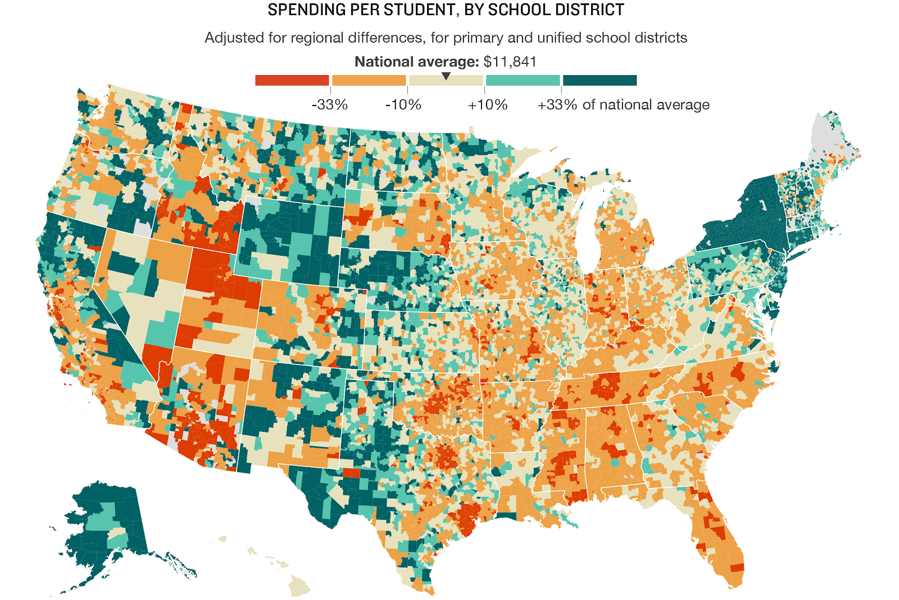
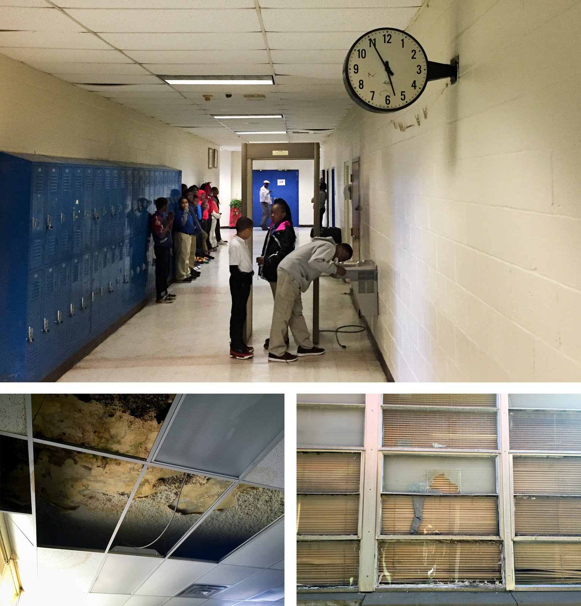

The Monetary Feasibility of More Technology in Schools
The Problem
Of course, it is easy for us to simply say ‘schools should add more technology.’ For schools, though, it’s much more complicated than that. To schools that are barely making ends meet as is, it’s a very tall task.
There are some schools that have plenty of money and could easily provide more technology for students, but there are others that lack the same sort of funding. The graphic below shows the amount of money that each St. Louis area school district spends per student annually:

As shown, districts like Bayless or Jennings wouldn’t have the same amount of money to spend on technology that districts such as Clayton or Brentwood would have.
However, this doesn’t stop in St. Louis. The graphic below shows how much every school district in the United States spends per student annually:
For an interactive version of this graphic, visit NPR’s article on school funding that is linked here: https://www.npr.org/2016/04/18/474256366/why-americas-schools-have-a-money-problem.
As you can see, there are disparities in districts everywhere across the country. Most public school funding comes from local property taxes, which means that schools located in wealthier neighborhoods have more available funds. This also means that there are less resources in schools in poorer neighborhoods. This then has implications on several areas, which ultimately leads to some schools not having the same ability to acquire technology.
Implications
- Hardware (upgrades every 3-5 years)
- IT support and professional development
- Software
- Internet connectivity
- Upgrades to infrastructure
Schools often struggle the most with providing staff and being able to upgrade their infrastructure. When technology is increased, more staff is needed, which is challenging for schools that oftentimes don’t have enough money to hire enough teachers (Turner). As for infrastructure, some schools can hardly afford to maintain what they have now, so more infrastructure is particularly difficult (Semuels). For example, the photo below shows the current state of a poor school’s facilities:
As you can see, this particular school doesn’t have the funds to even fix their ceiling or fix their windows, so how would they be able to afford the infrastructure upgrades that are required for more technology? Clearly, there are some schools that simply can’t do it. However, there are some possible remedies for these problems.
Possible Solutions
- Redistributing funds at the state level
- The E-Rate Program
- Title I Funding
As I mentioned previously, the majority of public school funding comes from local property taxes. If states redistributed these taxes to even out the playing field a bit, then more schools would have the ability to provide technology for their students. We have seen states like North Carolina already do this to an extent. However, legislation is a bit slow, and not many states would be open to adopting this sort of policy in the future. So, redistribution is not necessarily a realistic solution.
Another solution to the school funding problem is the federal E-Rate program, which gives impoverished schools discounts of 20-90% on telecommunications services (United States, Department of Education, Office of the Under Secretary, Policy and Program Studies Service). The video below gives a bit more useful insight into this program:
Also, the E-Rate program can provide assistance in regards to retrofitting costs, which can help schools with serious infrastructure problems such as the school pictured above. The E-Rate program has been around since the 90’s, and has made a big difference in our schools by helping more and more students become computer literate
Title I is another federal program for schools in low-income areas, as it provides additional funding for schools where at least 40% of students qualify for free or reduced price lunch. The more students that qualify for FARL, the more funding the school receives. Typically, more money is given to elementary schools due to the impact it can have. How the money is used is usually left to the individual schools as long as it is used to enrich the experience of students, meaning that schools could very likely use it for technology.
Conclusion
In conclusion, some schools have the ability to obtain more technology than other schools due to inequity in school funding. However, I think that it is reasonable to expect to see more technology in all schools as it becomes more prevalent our society as a whole. While some schools may have trouble making ends meet, there are federal programs that can help them. With these, they may not be able to obtain the same level of technology as wealthier schools (i.e., they may not be able to buy Macbooks but instead buy Chromebooks), but they should still be able to provide some sort of technology for their students to help prepare them for the future.
However, we should still do more to help our schools. More states should follow North Carolina’s lead and change the way that they fund their schools while we must continue to protect our federal school funding programs. While more technology is surely feasible now, we need to take more steps to ensure that the same level of technology is available to all students for now and the future.
References
Schuls, James V. “How Much Do Saint Louis Area Schools Really Spend?” Show-Me Institute, 29 Apr. 2016, showmeinstitute.org/blog/accountability/how-much-do-saint-louis-area-schools-really-spend.
Semuels, Alana. “Good School, Rich School; Bad School, Poor School.” The Atlantic, 25 Aug. 2016, www.theatlantic.com/business/archive/2016/08/property-taxes-and-unequal-schools/497333/
Turner, Cory, et al. “Why America's Schools Have A Money Problem.” NPR, NPR, 18 Apr. 2016, www.npr.org/2016/04/18/474256366/why-americas-schools-have-a-money-problem.
United States, Department of Education, Office of the Under Secretary, Policy and Program Studies Service. “Federal Funding for Educational Technology and How It Is Used in the Classroom: A Summary of Findings from the Integrated Studies of Educational Technology.” US Department of Education, Oct. 2003. EBSCOhost, ezp.slu.edu/login?url=http://search.ebscohost.com/login.aspx?direct=true&db=eric&AN=ED527476&site=eds-live.